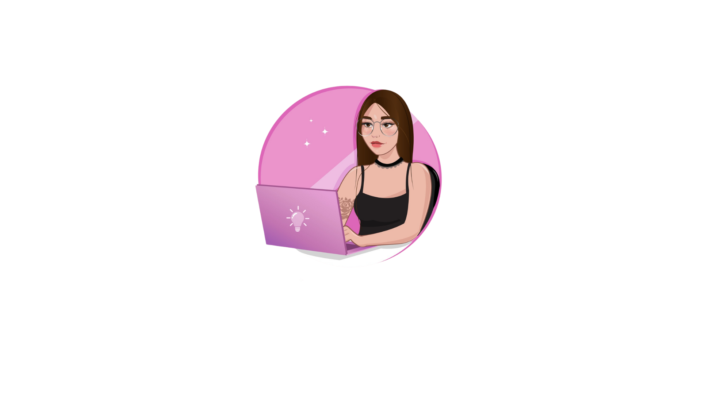

Tareas guardadas
0
poquito a poquito

Completadas
0
¡vas muy bien!
Vasos de agua
0/8
amor también es cuidarte
ORGANIZA TU DÍA
Tu espacio productivo ✨
Un plan pequeño también es un plan ✧
Abrir mi tablero ♡
¿Lista para organizar tus metas?
Revisa tus tareas, cambia su estado y celebra cada logro.